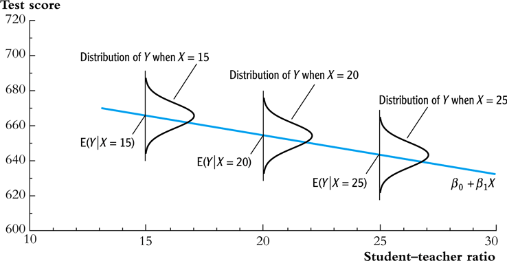
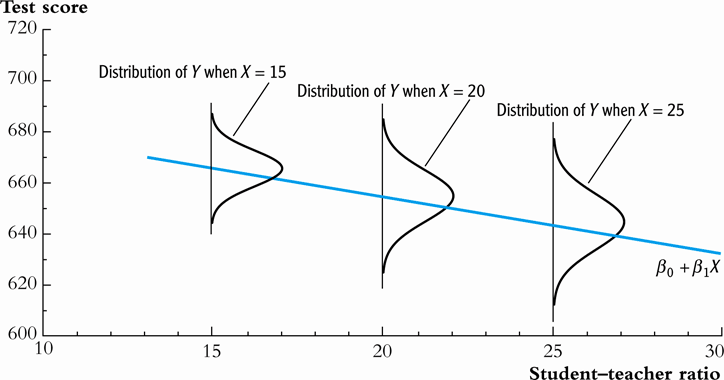

Lecture 7: Hypothesis Test of Linear Regression with a Single Regressor
Zheng Tian
Created: 2017-03-30 Thu 08:32
Table of Contents
- Testing Hypotheses about One of the Regression Coefficients
- Confidence Intervals for a Regression Coefficient
- Regression When the Regressor is a Binary Variable
- Heteroskedasticity and Homoskedasticity
- The Theoretical Foundations of Ordinary Least Squares
- Using the t-Statistic in Regression When the Sample Size is Small
Testing Hypotheses about One of the Regression Coefficients
The question after estimation
- Now the question faced by the superintendent of the California elementary school districts is whether the estimated coefficient on STR is valid.
- In the terminology of statistics, his question is whether \(\beta_1\) is statistically significantly different from zero.
Step 1: set up the two-sided hypothesis
\[ H_0: \beta_1 = \beta_{1,0}, H_1: \beta_1 \neq \beta_{1,0} \]
Step 2: Compute the t-statistic
The general form of the t-statistic is
\begin{equation} \label{eq:general-t} t = \frac{\text{estimator} - \text{hypothesized value}}{\text{standard error of the estimator}} \end{equation}The t-statistics for testing \(\beta_1\) is
\begin{equation} \label{eq:t-stat-b1} t = \frac{\hat{\beta}_1 - \beta_{1,0}}{SE(\hat{\beta}_1)} \end{equation}
The standard error of \(\hat{\beta}_1\) is calculated as
where
How to understand the equation for \(\hat{\sigma}^2_{\hat{\beta}_1}\)
- \(\hat{\sigma}^2_{\hat{\beta}_1}\) is the estimator of the variance of \(\hat{\beta}_1\), i.e., \(\mathrm{Var}(\hat{\beta}_1)\).
- The variance of \(\hat{\beta}_1\) is \[ \sigma^2_{\hat{\beta}_1} = \frac{1}{n} \frac{\mathrm{Var}\left( (X_i - \mu_X)u_i \right)}{\left( \mathrm{Var}(X_i) \right)^2} \]
- The denominator in \(\hat{\sigma}^2_{\hat{\beta}_1}\) is a consistent estimator of \(\mathrm{Var}(X_i)^2\).
- The numerator in \(\hat{\sigma}^2_{\hat{\beta}_1}\) is a consistent estimator of \(\mathrm{Var}((X_i - \mu_X)u_i)\).
- The standard error computed as \(\hat{\sigma}^2_{\hat{\beta}_1}\) is the heteroskedasticity-robust standard error.
Step 3: compute the p-value
The p-value is the probability of observing a value of \(\hat{\beta}_1\) at least as different from \(\beta_{1,0}\) as the estimate actually computed (\(\hat{\beta}^{act}_1\)), assuming that the null hypothesis is correct.
\begin{equation*} \begin{split} p\text{-value} &= \mathrm{Pr}_{H_0} \left( | \hat{\beta}_1 - \beta_{1,0} | > | \hat{\beta}^{act}_1 - \beta_{1,0} | \right) \\ &= \mathrm{Pr}_{H_0} \left( \left| \frac{\hat{\beta}_1 - \beta_{1,0}}{SE(\hat{\beta}_1)} \right| > \left| \frac{\hat{\beta}^{act}_1 - \beta_{1,0}}{SE(\hat{\beta}_1)} \right| \right) \\ &= \mathrm{Pr}_{H_0} \left( |t| > |t^{act}| \right) \end{split} \end{equation*}
Step 3: compute the p-value (cont'd)
- With a large sample, the t statistic is approximately distributed as a standard normal random variable. Therefore, we can compute \[p\text{-value} = \mathrm{Pr}\left(|t| > |t^{act}| \right) = 2 \Phi(-|t^{act}|)\] where \(\Phi(\cdot)\) is the c.d.f. of the standard normal distribution.
- The null hypothesis is rejected at the 5% significance level if the \(p\text{-value} < 0.05\) or, equivalently, \(|t^{act}| > 1.96\).
Application to test scores
- The heteroskedasticity-robust standard errors are reported in the parentheses.
- The null hypothesis against the alternative one as \[ H_0: \beta_1 = 0, H_1: \beta_1 \neq 0 \]
- The t-statistics is \[ t = \frac{\hat{\beta}_1}{SE(\hat{\beta}_1)} = \frac{-2.28}{0.52} = -4.38 < -1.96 \]
- The p-value associated with \(t^{act} = -4.38\) is approximately 0.00001, which is far less than 0.05. So we reject the null hypothesis.
Rejecting the null hypothesis

Figure 1: Calculating the p-value of a two-sided test when \(t^{act}=-4.38\)
The one-sided alternative hypothesis
The one-sided hypotheses
- In some cases, it is appropriate to use a one-sided hypothesis test. For example, the superintendent of the California school districts want to know whether an increase in class sizes has a negative effect on test scores, that is, \(\beta_1 < 0\).
For such a test, we can set up the null hypothesis and the one-sided alternative hypothesis as
\[ H_0: \beta_1 = \beta_{1,0} \text{ vs. } H_1: \beta_1 < \beta_{1,0} \]
The one-sided left-tail test
- The t-statistic is the same as in a two-sided test \[ t = \frac{\hat{\beta}_1 - \beta_{1,0}}{SE(\hat{\beta}_1)} \]
- Since we test \(\beta_1 < \beta_{1,0}\), if this is true, the t-statistics should be statistically significantly less than zero.
- The p-value is computed as \(\mathrm{Pr}(t < t^{act}) = \Phi(t^{act})\).
- The null hypothesis is rejected at the 5% significance level when \(\text{p-value} < 0.05\) or \(t^{act} < -1.645\).
- In the application of test scores, the t-statistics is -4.38, which is less than -1.645 and -2.33. Thus, the null hypothesis is rejected at the 1% level.
Confidence Intervals for a Regression Coefficient
Two equivalent definitions of confidence intervals
- Recall that a 95% confidence interval for \(\beta_1\) has two equivalent
definitions:
- It is the set of values of \(\beta_1\) that cannot be rejected using a two-sided hypothesis test with a 5% significance level.
- It is an interval that has a 95% probability of containing the true value of \(\beta_1\).
Construct the 95% confidence interval for \(\beta_1\)
- We can obtain the 95% confidence interval for \(\beta_1\) using the t statistic and the acceptance region at the 5% significant level.
- The acceptance region is \( -1.96 \leq \frac{\hat{\beta}_1 - \beta_1}{SE(\hat{\beta}_1)} \leq 1.96\)
- The 95% confidence interval for \(\beta_1\) is \[ \left[ \hat{\beta}_1 - 1.96 SE(\hat{\beta}_1),\; \hat{\beta}_1 + 1.96 SE(\hat{\beta}_1) \right] \]
The application to test scores
- In the application to test scores, given that \(\hat{\beta}_1 = -2.28\) and \(SE(\hat{\beta}_1) = 0.52\), the 95% confidence interval for \(\beta_1\) is \[{-2.28 \pm 1.96 \times 0.52}, \text{ or } -3.30 \leq \beta_1 \leq -1.26\]
- The confidence interval only spans over the negative region, implying that the null hypothesis of \(\beta_1 = 0\) can be rejected at the 5% significance level.
Confidence intervals for predicted effects of changing \(X\)
- \(\beta_1\) is the marginal effect of \(X\) on \(Y\). That is, when \(X\) changes by \(\Delta X\), \(Y\) changes by \(\beta_1 \Delta X\).
So the 95% confidence interval for the change in \(Y\) when \(X\) changes by \(\Delta X\) is
\begin{gather*} \left[ \hat{\beta}_1 - 1.96 SE(\hat{\beta}_1) ,\; \hat{\beta}_1 + 1.96SE(\hat{\beta}_1) \right] \times \Delta X \\ = \left[ \hat{\beta}_1 \Delta X - 1.96 SE(\hat{\beta}_1) \Delta X,\; \hat{\beta}_1 \Delta X + 1.96SE(\hat{\beta}_1) \Delta X \right] \end{gather*}
Regression When the Regressor is a Binary Variable
A binary variable
A binary variable takes on values of one if some condition is true and zero otherwise, which is also called a dummy variable, a categorical variable, or an indicator variable.
\begin{equation*} D_i = \begin{cases} 1,\; &\text{if the } i^{th} \text{ subject is female} \\ 0,\; &\text{if the } i^{th} \text{ subject is male} \end{cases} \end{equation*}
The linear regression model with a binary regressor
- \(\beta_1\) is estimated by the OLS estimation method in the same way as a continuous regressor.
Interpretation of the regression coefficients
- Given that the assumption \(E(u_i | D_i) = 0\) holds, we have two
population regression functions:
- When \(D_i = 1\), \(E(Y_i|D_i = 1) = \beta_0 + \beta_1\)
- When \(D_i = 0\), \(E(Y_i|D_i = 0) = \beta_0\)
- \(\beta_1 = E(Y_i | D_i = 1) - E(Y_i |D_i = 0)\), i.e., the difference in the population means between two groups.
Hypothesis tests and confidence intervals
The null v.s. alternative hypothesis
\[ H_0:\, \beta_1 = 0 \text{ vs. } H_1:\, \beta_1 \neq 0 \]
The t-statistic
\[ t = \frac{\hat{\beta}_1}{SE(\hat{\beta}_1)} \]
The 95% confidence interval
\[ \hat{\beta}_1 \pm 1.96 SE(\hat{\beta}_1) \]
Application to test scores
We use a binary variable \(D\) to represent small and large classes.
\begin{equation*} D_i = \begin{cases} 1,\; &\text{if } STR_i < 20 \text{ (small classes)} \\ 0,\; &\text{if } STR_i \geq 20 \text{ (large classes)} \end{cases} \end{equation*}Using the OLS estimation, the estimated regression function is
\begin{equation*} \widehat{TestScore} = \underset{\displaystyle (1.3)}{650.0} - \underset{\displaystyle (1.8)}{7.4} D,\; R^2 = 0.037,\; SER = 18.7 \end{equation*}
Application to test scores (cont'd)
- The t-statistic for \(\beta_1\) is \(t = 7.4 / 1.8 = 4.04 > 1.96\) so that
\(\beta_1\) is significantly different from zero.
- The test score in small classes are on average 7.4 higher than that in large classes.
- The confidence interval for the difference is \(7.4 \pm 1.96 \times 1.8 = (3.9, 10.9)\).
Heteroskedasticity and Homoskedasticity
Homoskedasticity
- The error term \(u_i\) is homoskedastic if the conditional variance of \(u_i\) given \(X_i\) is constant for all \(i = 1, \ldots, n\).
- Mathematically, it says \(\mathrm{Var}(u_i | X_i) = \sigma^2,\, \text{ for } i = 1, \ldots, n\), i.e., the variance of \(u_i\) for all i is a constant and does not depend on \(X_i\).
Heteroskedasticity
- The error term \(u_i\) is heteroskedastic if the conditional variance of \(u_i\) given \(X_i\) changes on \(X_i\) for \(i = 1, \ldots, n\).
- \(\mathrm{Var}(u_i | X_i) = \sigma^2_i,\, \text{ for } i = 1, \ldots, n\).
- A multiplicative form of heteroskedasticity is \(\mathrm{Var}(u_i|X_i) = \sigma^2 f(X_i)\) where \(f(X_i)\) is a function of \(X_i\), for example, \(f(X_i) = X_i\) as a simplest case.
Homoskedasticity and heteroskedasticity compared

Figure 2: Homoskedasticity

Figure 3: Heteroskedasticity
Mathematical implications of homoskedasticity
Unbiasedness, consistency, and the asymptotic distribution
- As long as the least squares assumptions holds, whether the error
term, \(u_i\), is homoskedastic or heteroskedastic does not affect
unbiasedness, consistency, and the asymptotic normal distribution
of the OLS estimators.
- The unbiasedness requires that \(E(u_i|X_i) = 0\)
- The consistency requires that \(E(X_i u_i) = 0\), which is true if \(E(u_i|X_i)=0\).
- The asymptotic normal distribution requires additionally that \(\mathrm{Var}((X_i-\mu_X)u_i) < \infty\), which still holds as long as Assumption 3 holds.
Efficiency
- The existence of heteroskedasticity affects the enfficiency of the
OLS estimator
- Suppose \(\hat{\beta}_1\) and \(\tilde{\beta}_1\) are both unbiased estimators of \(\beta_1\). Then, \(\hat{\beta}_1\) is said to be more efficient than \(\tilde{\beta}_1\) if \[\mathrm{Var}(\hat{\beta}_1) < \mathrm{Var}(\tilde{\beta}_1)\]
- When the errors are homoskedastic, the OLS estimators \(\hat{\beta}_0\) and \(\hat{\beta}_1\) are the most efficient among all estimators that are linear in \(Y_1, \ldots, Y_n\) and are unbiased, conditional on \(X_1, \ldots, X_n\).
The homoskedasticity-only variance formula
Recall that we can write \(\hat{\beta}_1\) as
\begin{equation*} \hat{\beta}_1 = \beta_1 + \frac{\sum_i (X_i - \bar{X})u_i}{\sum_i (X_i - \bar{X})^2} \end{equation*}If \(u_i\) for \(i=1, \ldots, n\) is homoskedastic and \(\sigma^2\) is known, then
\begin{equation} \label{eq:vbeta-1a} \sigma^2_{\hat{\beta}_1} = \mathrm{Var}(\hat{\beta}_1 | X_i) = \frac{\sum_i (X_i - \bar{X})^2 \mathrm{Var}(u_i|X_i)}{\left[\sum_i (X_i - \bar{X})^2\right]^2} = \frac{\sigma^2}{\sum_i (X_i - \bar{X})^2} \end{equation}
The homoskedasticity-only variance when \(\sigma^2\) is unknown
- When \(\sigma^2\) is unknown, then we use \(s^2_u = 1/(n-2) \sum_i \hat{u}_i^2\) as an estimator of \(\sigma^2\).
The homoskedasticity-only estimator of the variance of \(\hat{\beta}_1\) is
\begin{equation} \label{eq:vbeta-1b} \tilde{\sigma}^2_{\hat{\beta}_1} = \frac{s^2_u}{\sum_i (X_i - \bar{X})^2} \end{equation}- The homoskedasticity-only standard error is \(SE(\hat{\beta}_1) = \sqrt{\tilde{\sigma}^2_{\hat{\beta}_1}}\).
The heteroskedasticity-robust standard error
The heteroskedasticity-robust standard error is
\begin{equation*} SE(\hat{\beta}_1) = \sqrt{\hat{\sigma}^2_{\hat{\beta}_1}} \end{equation*}where
\begin{equation*} \hat{\sigma}^2_{\hat{\beta}_1} = \frac{1}{n} \frac{\frac{1}{n-2} \sum_{i=1}^n (X_i - \bar{X})^2 \hat{u}^2_i}{\left[ \frac{1}{n} \sum_{i=1}^n (X_i - \bar{X})^2 \right]^2} \end{equation*}which is also referred to as Eicker-Huber-White standard errors.
What does this mean in practice?
- Heteroskedasticity is common in cross-sectional data. It is always safer to report the heteroskedasticity-robust standard errors and use these to compute the robust t-statistic.
- In most software, the default setting is to report the
homoskedasticity-only standard errors. Therefore, you need to
manually add the option for the robust estimation.
In R, you can use the following codes
library(lmtest) model1 <- lm(testscr ~ str, data = classdata) coeftest(model1, vcov = vcovHC(model1, type="HC1"))
The Theoretical Foundations of Ordinary Least Squares
The Gauss-Markov conditions
The least squares assumptions
We have already known the least squares assumptions:
for \(i = 1, \ldots, n\),
- \(E(u_i|X_i) = 0\)
- \((X_i, Y_i)\) are i.i.d., and
- Large outliers are unlikely.
The Gauss-Markov conditions
For \(\mathbf{X} = [X_1, \ldots, X_n]\)
- \(E(u_i| \mathbf{X}) = 0\) (The exogeneity assumption )
- \(\mathrm{Var}(u_i | \mathbf{X}) = \sigma^2_u,\, 0 < \sigma^2_u < \infty\) (The homoskedasticity assumption)
- \(E(u_i u_j | \mathbf{X}) = 0,\, i \neq j\) (The uncorrelation assumption)
From the three Least Squares Assumptions and the homoskedasticity assumption to the Gauss-Markov conditions
- All the Gauss-Markov conditions, except for the homoskedasticity
assumption, can be derived from the least squares assumptions.
- The least squares assumptions (1) and (2) imply \(E(u_i | \mathbf{X}) = E(u_i | X_i) = 0\).
- The least squares assumptions (1) and (2) imply \(\mathrm{Var}(u_i| \mathbf{X}) = \mathrm{Var}(u_i | X_i)\).
- With the homoskedasticity assumption, \(\mathrm{Var}(u_i | X_i) = \sigma^2_u\), the least squares assumption (3) then implies \(0 < \sigma^2_u < \infty\).
- The least squares assumptions (1) and (2) imply that \(E(u_i u_j | \mathbf{X}) = E(u_i u_j | X_i, X_j) = E(u_i|X_i) E(u_j|X_j) = 0\).
The Gauss-Markov Theorem
The Gauss-Markov Theorem for \(\hat{\beta}_1\):
If the Gauss-Markov conditions hold, then the OLS estimator \(\hat{\beta}_1\) is the Best (most efficient) Linear conditionally Unbiased Estimator (BLUE).
- The theorem can also be applied to \(\hat{\beta}_0\).
Linear conditionally unbiased estimator
The linear estimators of \(\beta_1\)
Any linear estimator \(\tilde{\beta}_1\), it can be written as
\begin{equation} \label{eq:beta1-tilde} \tilde{\beta}_1 = \sum_{i=1}^n a_i Y_i\ \end{equation}where the weights \(a_i\) for \(i = 1, \ldots, n\) depend on \(X_1, \ldots, X_n\) but not on \(Y_1, \ldots, Y_n\).
The linear conditionally unbiased estimators
\(\tilde{\beta}_1\) is conditionally unbiased means that
\begin{equation} \label{eq:e-beta1-tilde} E(\tilde{\beta}_1 | \mathbf{X}) = \beta_1\ \end{equation}By the Gauss-Markov conditions, we can have
\begin{equation*} \begin{split} E(\tilde{\beta}_1 | \mathbf{X}) &= \sum_i a_i E(\beta_0 + \beta_1 X_i + u_i | \mathbf{X}) \\ &= \beta_0 \sum_i a_i + \beta_1 \sum_i a_i X_i \end{split} \end{equation*}- For the equation above being satisfied with any \(\beta_0\) and \(\beta_1\), we must have \[ \sum_i a_i = 0 \text{ and } \sum_i a_iX_i = 1 \]
The OLS esimator \(\hat{\beta}_1\) is a linear conditionally unbiased estimator
\(\hat{\beta}_1 = \frac{\sum_i (X_i - \bar{X})(Y_i - \bar{Y})}{\sum_i (X_i - \bar{X})^2} = \frac{\sum_i (X_i - \bar{X})Y_i}{\sum_i (X_i - \bar{X})^2} = \sum_i \hat{a}_i Y_i\)
where the weights are \[ \hat{a}_i = \frac{X_i - \bar{X}}{\sum_i (X_i - \bar{X})^2}, \text{ for } i = 1, \ldots, n \]
Since \(\hat{\beta}_1\) is a linear conditionally unbiased estimator, we must have
\[ \sum_i \hat{a}_i = 0 \text{ and } \sum_i \hat{a}_i X_i = 1 \]
which can be simply verified.
A scratch of the proof of the Gauss-Markov theorem
- A key in the proof of the Gauss-Markov theorem is that we can rewrite the expression of any linear conditionally unbiased estimator \(\tilde{\beta}_1\) as \[ \tilde{\beta}_1 = \sum_i a_i Y_i = \sum_i (\hat{a}_i + d_i)Y_i = \hat{\beta}_1 + \sum_i d_i Y_i \]
- The goal of the proof is to show that \[ \mathrm{Var}(\hat{\beta}_1 | \mathbf{X}) \leq \mathrm{Var}(\tilde{\beta}_1 | \mathbf{X}) \] The equality holds only when \(\tilde{\beta}_1 = \hat{\beta}_1\).
- The proof of the Gauss-Markov theorem is in Appendix 5.2.
The limitations of the Gauss-Markov theorem
- The Gauss-Markov conditions may not hold in practice.
Any violation of the Gauss-Markov conditions will result in the OLS estimators that are not BLUE.
Table 1: Summary of Violations of the Gauss-Markov Theorem Violation Cases Consequences Remedies \(E(u \mid X) \neq 0\) omitted variables, endogeneity biased more \(X\), IV method \(\mathrm{Var}(u_i\mid X)\) not constant heteroskedasticity inefficient WLS, GLS, HCCME \(E(u_{i}u_{j}\mid X) \neq 0\) autocorrelation inefficient GLS, HAC
Using the t-Statistic in Regression When the Sample Size is Small
The classical assumptions of the least squares estimation
The classical assumptions of the least squares estimation:
For \(i = 1, 2, \ldots, n\)
- Assumption 1: \(E(u_i | X_i) = 0\) (exogeneity of \(X\))
- Assumption 2: \((X_i, Y_i)\) are i.i.d. (IID of \(X, Y\))
- Assumption 3: \(0 < E(X_i^4) < \infty\) and \(0 < E(Y_i^4) < \infty\) (No large outliers)
- Extended Assumption 4: \(\mathrm{Var}(u_i | X_i) = \sigma^2_u, \text{ and } 0 < \sigma^2_u < \infty\) (homoskedasticity)
- Extended Assumption 5: \(u_i | X_i \sim N(0, \sigma^2_u)\) (normality)
The t-Statistic and the Student-t Distribution
The t-statistic is for \(\beta_1\)
- The null v.s. alternative hypotheses: \[H_0: \beta_1 = \beta_{1,0} \text{ vs } H_1: \beta_1 \neq \beta_{1,0}\]
The t-statistic: \[t = \frac{\hat{\beta}_1 - \beta_{1,0}}{\hat{\sigma}_{\hat{\beta}_1}}\]
where \(\hat{\sigma}^2_{\hat{\beta}_1} = \frac{s^2_u}{\sum_i (X_i - \bar{X})^2}\) and \(s^2_u = \frac{1}{n-2}\sum_i \hat{u}_i^2 = SER^2\).
The Student-t distribution of \(t\)
When the classical least squares assumptions hold, the t-statistic has the exact distribution of \(t(n-2)\), i.e., the Student's t distribution with \((n-2)\) degrees of freedom.
\[ t = \frac{\hat{\beta}_1 - \beta_{1,0}}{\hat{\sigma}_{\hat{\beta}_1}} \sim t(n-2) \]